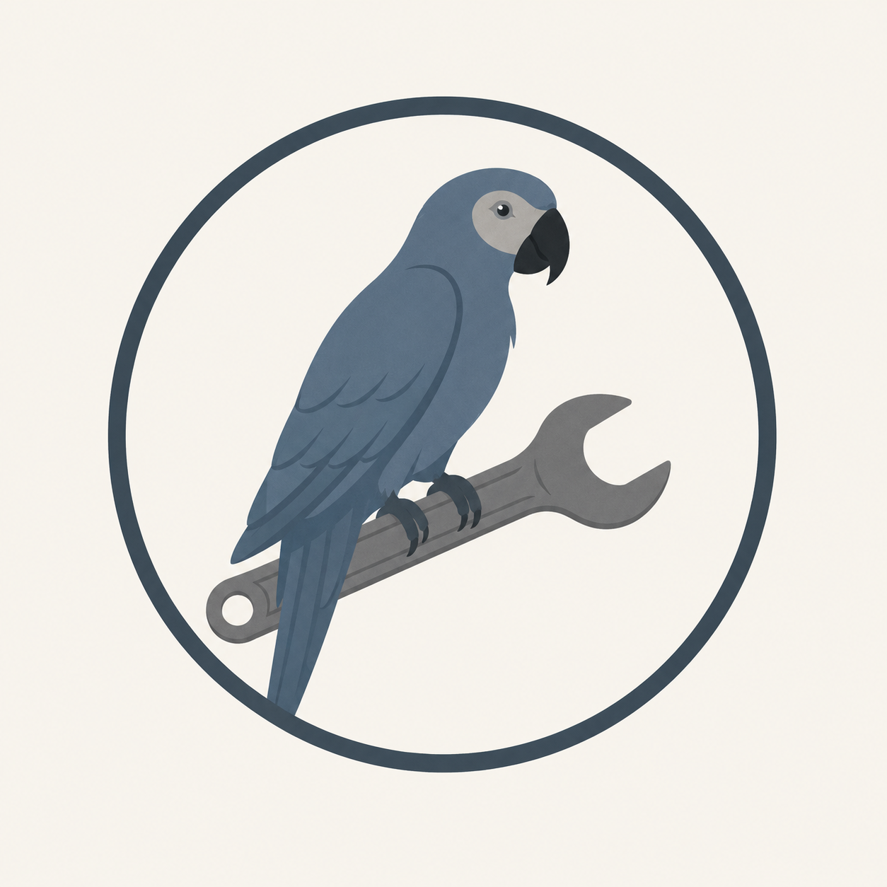

An engineering-based approach to helping enthusiasts make informed decisions.

Every enthusiast vehicle deserves thoughtful attention—not guesswork.
Whether you're trying to diagnose an intermittent issue, plan a restoration, maintain a collector vehicle, or simply determine the best path forward, Ex-Parrot Motorworks provides independent guidance backed by engineering principles and years of hands-on experience.
Conducting thorough pre-buy inspections for clients to help ensure they are getting what they want. Full pictures and reports provided.
Independent guidance before repairs or restoration.
Systematic troubleshooting to identify root causes—not just symptoms.
Guiding clients through routine maintenance and selected mechanical work for enthusiast vehicles.
Vehicle retrieval, transport assistance, project planning, and specialist coordination.
For the ethusiast looking to compete with their vehicle, we provide experienced consulting services on a variety of topics including car selection, build strategy, racing goals, etc. All forms of racing included but primarily geared for autocross (solo), endurance racing and track days.
The objective is simple:
Help owners make informed decisions.
Whether the work is performed with the assistance of Ex-Parrot Motorworks or by one of the many talented specialists we partner with, the goal is always the same:
Keep interesting machines alive.